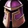

Onslaught Greathelm
Onslaught GreathelmOnslaught Greathelm1483 armor, 23 strength, 28 agility, 48 stamina, 36 defense rating, 30 block rating, 35 block valueSockets meta, red · Socket bonus 6 staminaTier set piece, Onslaught Armor. Bought with a token, never a raid drop
1483 armor, 23 strength, 28 agility, 48 stamina, 36 defense rating, 30
block rating, 35 block value
Sockets meta, red · Socket bonus 6 stamina
Tier set piece, Onslaught Armor. Bought with a token, never a raid drop
Protection Warrior
not yet decided
Constraints
Hit cap9%threat
floor
Improved Faerie Fire-3%assumed
Gear needs6%
The Precision talent sits in the Fury tree, which this build does not
reach.
Entry6.7%clear
by 0.7%
Tier hands9.9%clear
by 3.9%
Tier hands and head9.9%clear
by 3.9%
The constraint that decides this spec's gear is crit immunity, which it
reaches at 490 defense skill, or 284 defense rating from gear.
That rating figure assumes Anticipation at 5 ranks, which supplies 20
defense skill. Without it the requirement is 332 rating.
Pushing crushing blows off the attack table needs 102.4% of miss, dodge,
parry and block on the character sheet.
White swings stop critting at 69.5%, measured at the special-attack hit
cap.
Nothing rostered reaches it this phase, so crit stays linear all tier.
No haste threshold to protect.
Delta
Onslaught GreathelmOnslaught
Greathelm1483 armor, 23 strength, 28
agility, 48 stamina, 36 defense rating, 30 block rating, 35 block
valueSockets meta, red · Socket
bonus 6 staminaTier set piece,
Onslaught Armor. Bought with a token, never a raid
drop in Protection
Warrior terms
| Stat | Over best Phase 3 off-piece, Black Temple Faceplate of the ImpenetrableFaceplate of the Impenetrable1532 armor, 82 stamina, 30 defense rating, 38 dodge rating, 29 block rating, 45 block valueSockets meta, red · Socket bonus 6 staminaDrops from Illidan Stormrage, Black Temple | Over Tier 5, Serpentshrine Cavern Destroyer GreathelmDestroyer Greathelm1355 armor, 28 strength, 28 agility, 48 stamina, 30 defense rating, 33 dodge ratingSockets meta, red · Socket bonus 4 dodge ratingTier set piece, Destroyer Armor. Bought with a token, never a raid drop | Over best pre-phase off-piece,
Tempest Keep
 Fel-Steel WarhelmFel-Steel Warhelm1306 armor, 46 strength, 46 stamina, 30 hit rating (1.90%), 44 crit rating (1.99%)Drops from Void Reaver, Tempest Keep |
|||
|---|---|---|---|---|---|---|
| Change | Converted | Change | Converted | Change | Converted | |
| armor | -49 | +128 | +177 | |||
| strength | +23 | +46 attack power · +23 strength | -5 | -10 attack power · -5 strength | -23 | -46 attack power · -23 strength |
| agility | +28 | 0 attack power · +0.85% melee crit · +28 agility | 0 | +28 | 0 attack power · +0.85% melee crit · +28 agility | |
| stamina | -34 | -34 stamina | 0 | +2 | +2 stamina | |
| hit | 0 | 0 | -30 | -1.90% | ||
| crit | 0 | 0 | -44 | -1.99% | ||
| defense rating | +6 | +6 | +36 | |||
| dodge rating | -38 | -33 | 0 | |||
| block rating | +1 | +30 | +30 | |||
| block value | -10 | +35 | +35 | |||
| Net | +23 strength +28 agility -34 stamina | -5 strength | -23 strength +28 agility +2 stamina | |||
No Tier 6 is ranked for this spec in this slot, so that comparison is
not shown. A weapon the workbook does not rank cannot be compared
against, and a spec with no captured gear set has nothing recorded to
carry in.